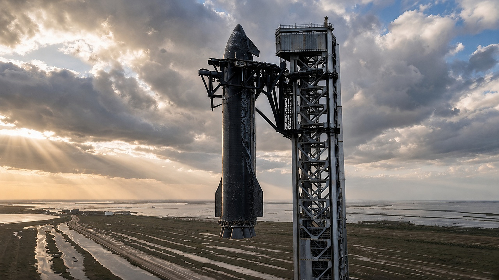

Starship's first orbital catch boosts Artemis lander hopes as Vulcan suffers ULA's first launch failure
SpaceX caught a Starship upper stage returning from orbit for the first time Saturday, a key step for the Artemis lander, though the Super Heavy booster was lost in the Gulf. Axiom closed the critical design review for its Artemis spacesuit. A day later, ULA's Vulcan failed about 10 minutes into flight with 40 Amazon Leo satellites, the company's first total mission failure; NASA's administrator offered help with the investigation. On Golden Dome, the lame-duck Congress has until the Dec. 11 CR deadline to decide whether the program's $17 billion FY2027 request survives.

Artemis: Starship comes home, and the Moon suit clears CDR
SpaceX caught Ship 42 with the Starbase tower arms at 3:20 p.m. CT Saturday, about 22.5 hours after Flight 15 lifted off Friday at 4:47 p.m. CT. It was the first time an orbital upper stage has flown back to its launch site. The ship deployed 26 Starlink V3 satellites, coasted for 14 orbits, relit a Raptor for the deorbit burn and, per SpaceX, came through entry with its heat shield working well. Super Heavy Booster 22 didn’t make it: its guidance aborted the catch and diverted it offshore, where it was destroyed over the Gulf. Starship is one of two Artemis landers, and SpaceX wants Flight 16 to be the first launch from Kennedy.
On suits, Axiom Space closed NASA’s critical design review for the AxEMU on Nov. 13 and moves into production and qualification testing. It plans to finish the pressure garment and life support backpack by early 2027 and is building a short-excursion “Sortie” version for the first landings.
Sources: SpaceX: Starship Flight 15 (Nov. 14); Spaceflight Now: Starship returns to Starbase and a successful tower catch (Nov. 14); New York Times via Philadelphia Inquirer: SpaceX makes history with successful rocket catch in Texas (Nov. 15); Axiom Space: Axiom Space Completes NASA’s Critical Design Review for Next-Generation Spacesuit (Nov. 13)
NASA, ULA and Blue Origin: Vulcan’s bad Sunday
ULA’s Vulcan lifted off at 11:40 a.m. CT Sunday on its return to flight but failed about 10 minutes in, during the Centaur V upper-stage burn, and all 40 Amazon Leo satellites were lost. It’s ULA’s first outright failure since the company formed in 2006. The cause isn’t known. Spaceflight Now reports the BE-4-powered first stage appeared to burn and separate later than planned. The six redesigned solid boosters appeared to work normally. NASA Administrator Jared Isaacman offered NASA’s help: “Artemis, Moon Base, and the nation need ULA.”
Vulcan was already paused for national security missions over its booster nozzles, so this extends the wait. Two of Amazon’s big launchers are now down, with Blue Origin’s New Glenn not back until January. Also this week: Voyager 1 hits one light-day from Earth Wednesday, and Senate Commerce votes on NASA’s CFO and inspector general nominees.
Sources: Spaceflight Now: ULA suffers first outright failure with loss of Vulcan rocket carrying 40 Amazon Leo satellites (Nov. 15); SpaceNews: Vulcan launch of Amazon Leo satellites fails (Nov. 15); Reuters: Rocket from Boeing-Lockheed firm fails mid-flight, destroys payload of Amazon satellites (Nov. 15); SpacePolicyOnline: What’s Happening in Space Policy November 15-21, 2026 (Nov. 15)
Golden Dome: Lame-duck money decides the shape
Congress is back with a Dec. 11 continuing resolution deadline and no FY2027 bills enacted. Most of Golden Dome’s $17 billion FY2027 request sits in a proposed $350 billion defense reconciliation package, and SpacePolicyOnline reports both parties are signaling that figure is too high. The Senate’s defense spending mark may come out this week. Meanwhile, the program is running without the one-time $24 billion it got in FY2026, and Ars Technica reports the preliminary House and Senate bills would fund only a fraction of the request. For contractors working on space-based interceptors and the tracking layer, the next three weeks matter more than any architecture briefing.
Sources: SpacePolicyOnline: What’s Happening in Space Policy November 15-21, 2026 (Nov. 15); Ars Technica: New Democratic Congress will likely strip the gilding from Trump’s Golden Dome (Nov. 9)
Sources
-
SpaceX
Starship Flight 15
-
Spaceflight Now
Starship returns to Starbase and a successful tower catch
-
New York Times via Philadelphia Inquirer
SpaceX makes history with successful rocket catch in Texas
-
Axiom Space
Axiom Space Completes NASA's Critical Design Review for Next-Generation Spacesuit
-
Spaceflight Now
ULA suffers first outright failure with loss of Vulcan rocket carrying 40 Amazon Leo satellites
-
SpaceNews
Vulcan launch of Amazon Leo satellites fails
-
Reuters
Rocket from Boeing-Lockheed firm fails mid-flight, destroys payload of Amazon satellites
-
SpacePolicyOnline
What's Happening in Space Policy November 15-21, 2026
-
SpacePolicyOnline
What's Happening in Space Policy November 15-21, 2026
-
Ars Technica
New Democratic Congress will likely strip the gilding from Trump's Golden Dome